| Catalog | a0_003b0_01 |
|---|---|
| Author | Jaqcui Gilchrist, 2018/09/27 |
| Description | hold b-a constant, but change a and b: a=0.003, b=0.01 |
| Fault/Def Model | Fault Model 3.1, Geologic |
| Slip Velocity | 1.0 m/s |
| Average Element Area | 1.35 km^2 |
| Length | 9,824,003 events in 423,823 years |
| Frictional Params | a=0.003, b=0.01, (b-a)=0.007, ddotEQ=1 |
| Scatter | 2-D Hist |
|---|---|
 |  |
| Scatter | 2-D Hist |
|---|---|
 |  |
| Scatter |  |
|---|---|
| Distance/Velocity |  |
| M≥6 | M≥6.5 | M≥7 | M≥7.5 |
|---|---|---|---|
| 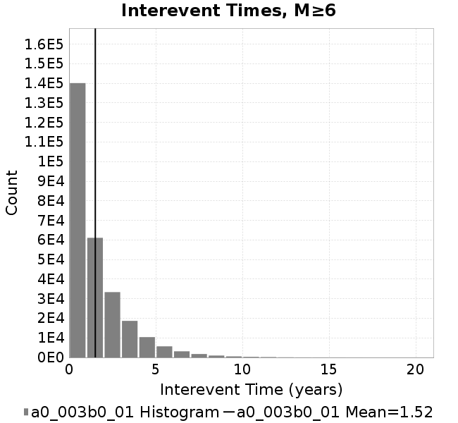 | 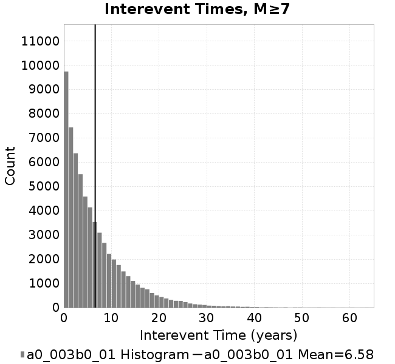 |  |
| M≥6 | M≥6.5 | M≥7 | M≥7.5 | |
|---|---|---|---|---|
| Elements |  |  |  | 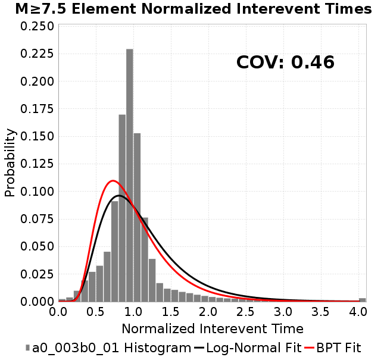 |
| Subsections |  | 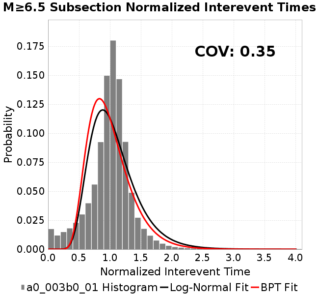 |  |  |
| Sections |  |  |  |  |

| Min Mag | Scatter | 2-D Hist |
|---|---|---|
| M≥6.0 |  |  |
| M≥6.5 | 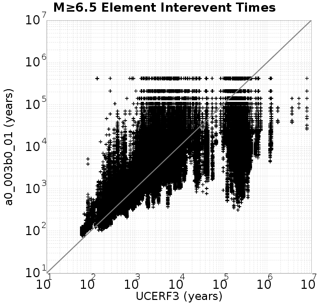 | 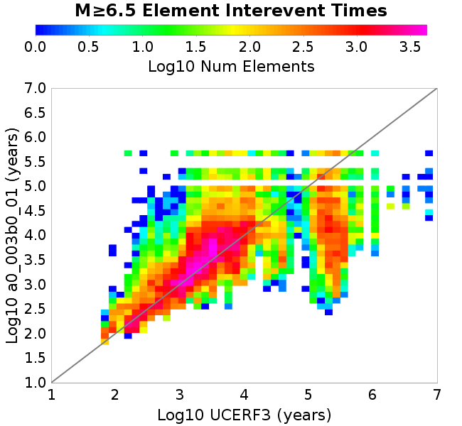 |
| M≥7.0 |  |  |
| M≥7.5 |  | 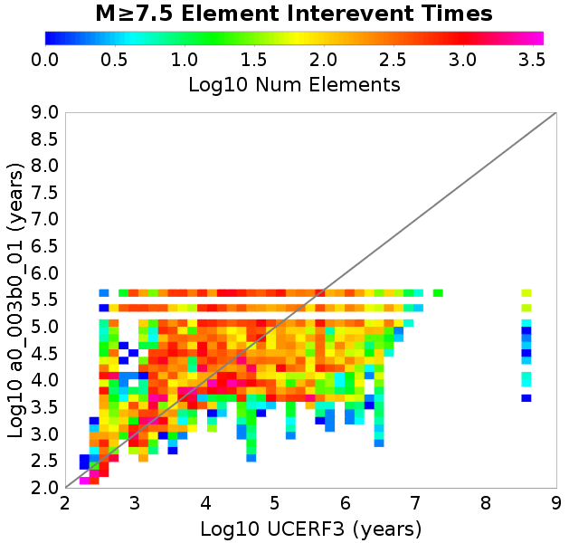 |
Subsections participate in a rupture if at least 20.0 % of its area ruptures
| Min Mag | Scatter | 2-D Hist |
|---|---|---|
| M≥6.0 | 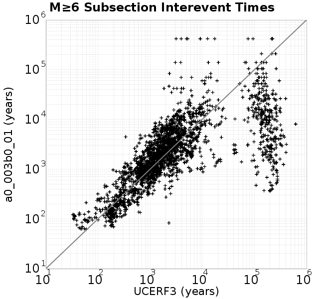 | 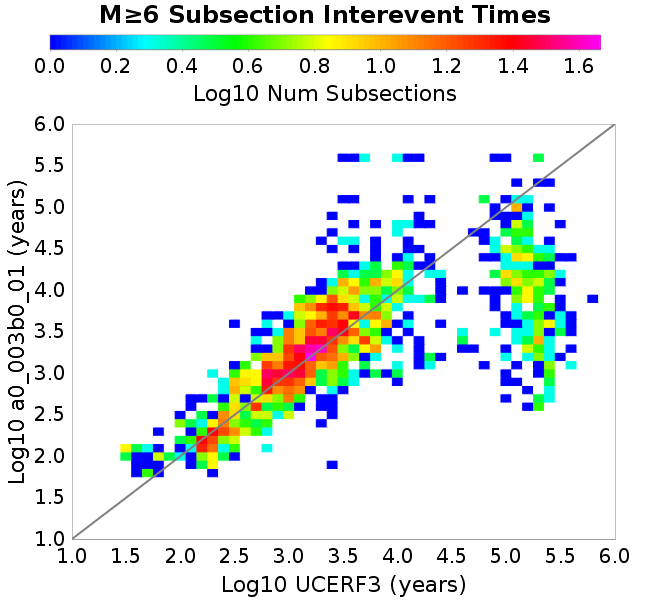 |
| M≥6.5 | 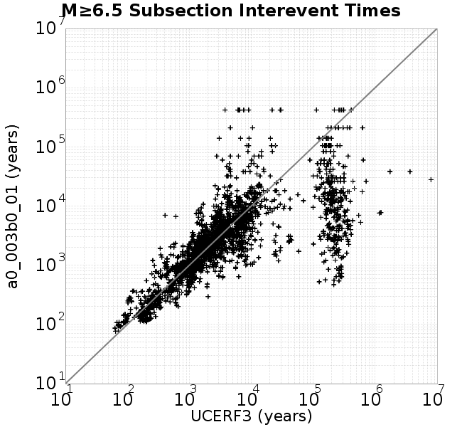 | 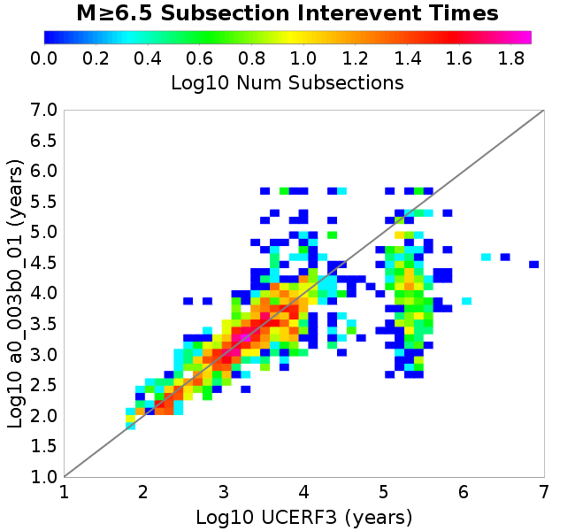 |
| M≥7.0 |  |  |
| M≥7.5 | 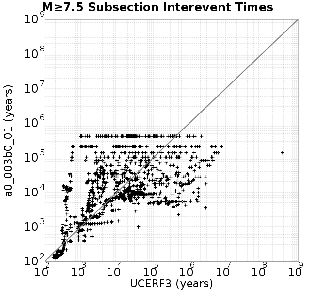 |  |
These plots use the 5 paleoseismic sites identified in Biasi & Scharer (2019) on the Hayward, N. SAF, S. SAF, and SJC faults. By default, a rupture is counted at a paleo site if the nearest element (at the surface) slips any amount. We also alternatively apply a probability of detection model. Those results are marked as 'Prob. Filtered'.
Paleoseismic sites table:
| Site Name | Data MRI (yr) | Data Annual Rate | Catalog MRI (yr) | Catalog Annual Rate | Catalog Occurences | Prob Filtered Catalog MRI (yr) | Prob Filtered Catalog Annual Rate | Prob Filtered Catalog Occurences |
|---|---|---|---|---|---|---|---|---|
| HOG | 191.00 | 0.005235602 | 367.67 | 0.0027198596 | 1140 | 371.94 | 0.002688578 | 1126.89 |
| FRA | 119.00 | 0.008403362 | 121.10 | 0.008257532 | 3459 | 126.31 | 0.007917078 | 3316.32 |
| COA | 181.00 | 0.005524862 | 177.12 | 0.0056459904 | 2365 | 190.28 | 0.0052555124 | 2201.47 |
| SCZ | 106.00 | 0.009433962 | 122.84 | 0.008140821 | 3409 | 141.86 | 0.0070489855 | 2951.64 |
| TYS | 329.00 | 0.0030395137 | 346.50 | 0.0028860273 | 1208 | 383.98 | 0.0026043332 | 1090.14 |
| TOTAL | 31.61 | 0.0316373 | 36.17 | 0.027649667 | 11580 | 39.21 | 0.025505567 | 10682.09 |
Paleoseismic Plots:
 |  |
|---|
Open interval probabilities table:
| Open Interval (yr) | Catalog Probability | Catalog Poisson Probability | Prob. Filtered Catalog Probability | Prob. Filtered Catalog Poisson Probability | Data Poisson Probability |
|---|---|---|---|---|---|
| 10.00 | 0.97377604 | 0.75843614 | 0.97752154 | 0.7748734 | 0.72878754 |
| 20.00 | 0.9058843 | 0.57522535 | 0.91831684 | 0.60042876 | 0.53113127 |
| 30.00 | 0.8096018 | 0.43627173 | 0.8331244 | 0.46525624 | 0.3870819 |
| 40.00 | 0.6910714 | 0.33088425 | 0.7259891 | 0.36051467 | 0.28210047 |
| 50.00 | 0.5757843 | 0.25095457 | 0.6197773 | 0.2793532 | 0.2055913 |
| 60.00 | 0.46307266 | 0.19033301 | 0.5117848 | 0.21646336 | 0.14983238 |
| 70.00 | 0.3536137 | 0.14435543 | 0.40542346 | 0.1677317 | 0.10919597 |
| 80.00 | 0.25745985 | 0.109484375 | 0.30884215 | 0.12997082 | 0.079580665 |
| 90.00 | 0.17836446 | 0.08303691 | 0.22675633 | 0.10071093 | 0.057997398 |
| 100.00 | 0.1175748 | 0.06297819 | 0.15875313 | 0.078038216 | 0.04226778 |
| 110.00 | 0.07305293 | 0.04776494 | 0.105160184 | 0.060469735 | 0.030804234 |
| 120.00 | 0.03992303 | 0.036226653 | 0.063611515 | 0.04685639 | 0.022449743 |
| 130.00 | 0.015856583 | 0.027475605 | 0.03152 | 0.036307767 | 0.016361093 |
| 140.00 | 0.005122791 | 0.020838492 | 0.013067003 | 0.028133921 | 0.011923761 |
| 150.00 | 0.0011212347 | 0.015804665 | 0.004121632 | 0.021800226 | 0.008689889 |
| 160.00 | 7.128151E-4 | 0.011986828 | 0.0023038713 | 0.016892415 | 0.0063330824 |
| 170.00 | 5.4510764E-4 | 0.009091244 | 0.0015419662 | 0.013089483 | 0.0046154717 |
| 180.00 | 0.0 | 0.006895128 | 6.0588395E-4 | 0.010142691 | 0.0033636983 |
| 190.00 | 0.0 | 0.0052295146 | 2.777799E-4 | 0.007859302 | 0.0024514215 |
| 200.00 | 0.0 | 0.003966253 | 1.5978573E-4 | 0.0060899635 | 0.0017865654 |
| 210.00 | 0.0 | 0.0030081493 | 5.7853864E-5 | 0.0047189505 | 0.0013020267 |
| 220.00 | 0.0 | 0.002281489 | 4.181383E-5 | 0.003656589 | 9.489008E-4 |
| 230.00 | 0.0 | 0.0017303638 | 1.7298553E-5 | 0.0028333934 | 6.915471E-4 |
| 240.00 | 0.0 | 0.0013123705 | 1.4794804E-5 | 0.002195521 | 5.039909E-4 |
| 250.00 | 0.0 | 9.953493E-4 | 1.2291055E-5 | 0.0017012508 | 3.673023E-4 |
| 260.00 | 0.0 | 7.5490883E-4 | 0.0 | 0.0013182539 | 2.6768536E-4 |
These plots use the full set of UCERF3 paleoseismic sites. By default, a rupture is counted at a paleo site if the nearest element (at the surface) slips any amount. We also alternativeslyapply a probability of detection model. Those results are marked as 'Prob. Filtered'.
Paleoseismic sites table:
| Site Name | Data MRI (yr) | Data Annual Rate | Catalog MRI (yr) | Catalog Annual Rate | Catalog Occurences | Prob Filtered Catalog MRI (yr) | Prob Filtered Catalog Annual Rate | Prob Filtered Catalog Occurences |
|---|---|---|---|---|---|---|---|---|
| SSanAndreasBurroFlats | 205.44 | 0.0048677 | 208.60 | 0.004793956 | 2007 | 237.53 | 0.004210064 | 1762.61 |
| SSanAndreasIndio | 277.37 | 0.0036053 | 172.31 | 0.0058036195 | 2431 | 184.30 | 0.005425912 | 2272.84 |
| SSAFMCreek1000Palms | 261.33 | 0.0038266 | 1622.01 | 6.1652064E-4 | 258 | 2350.43 | 4.254548E-4 | 177.7 |
| NSanAndreasFortRoss | 306.28 | 0.003265 | 193.45 | 0.00516932 | 2165 | 195.97 | 0.0051027685 | 2137.14 |
| NSanAndreasNorthCoast | 263.87 | 0.0037898 | 184.09 | 0.005432086 | 2275 | 188.47 | 0.00530602 | 2222.17 |
| CalaverasfaultNorth | 618.05 | 0.001618 | 165.08 | 0.006057771 | 2538 | 238.14 | 0.0041992296 | 1759.15 |
| ElsinoreTemecula | 1019.16 | 9.812E-4 | 697.13 | 0.0014344488 | 601 | 724.80 | 0.0013796891 | 578.04 |
| ElsinoreWhittier | 3196.93 | 3.128E-4 | 1527.15 | 6.5481296E-4 | 275 | 1615.63 | 6.189544E-4 | 259.92 |
| SSAFCarrizoBidart | 114.71 | 0.0087179 | 123.89 | 0.008071848 | 3381 | 127.29 | 0.007855867 | 3290.55 |
| SanJacintoHogLake | 311.78 | 0.0032074 | 367.67 | 0.0027198596 | 1140 | 372.00 | 0.0026881716 | 1126.73 |
| PuenteHills | 3506.31 | 2.852E-4 | 5026.57 | 1.98943E-4 | 82 | 5450.09 | 1.8348335E-4 | 75.66 |
| SanGregorioNorth | 1019.06 | 9.813E-4 | 395.49 | 0.0025285366 | 1059 | 410.08 | 0.002438531 | 1021.31 |
| SanJacintoSuperstition | 508.26 | 0.0019675 | 1204.99 | 8.298841E-4 | 348 | 1295.71 | 7.7177875E-4 | 323.57 |
| SSanAndreasWrightwood | 106.04 | 0.0094304 | 154.86 | 0.0064576096 | 2705 | 156.66 | 0.006383094 | 2673.73 |
| SSanAndreasPitmanCanyon | 173.48 | 0.0057643 | 144.59 | 0.006916138 | 2897 | 162.37 | 0.006158599 | 2579.71 |
| SSanAndreasPlungeCreek | 205.36 | 0.0048695 | 353.42 | 0.0028295335 | 1185 | 440.50 | 0.0022701523 | 950.79 |
| FrazierMountianSSAF | 148.57 | 0.0067307 | 121.10 | 0.008257532 | 3459 | 126.33 | 0.007915962 | 3315.88 |
| NSanAndreasSantaCruzSeg | 109.84 | 0.0091041 | 122.84 | 0.008140821 | 3409 | 141.92 | 0.0070460523 | 2950.43 |
| RodgersCreek | 325.31 | 0.003074 | 169.87 | 0.0058867857 | 2466 | 233.10 | 0.004290029 | 1796.9 |
| GreenValleyMasonRoad | 293.31 | 0.0034094 | 1792.39 | 5.579147E-4 | 234 | 2368.93 | 4.221308E-4 | 176.86 |
| HaywardfaultNorth | 318.34 | 0.0031413 | 375.75 | 0.0026613222 | 1114 | 386.35 | 0.0025883452 | 1083.48 |
| HaywardfaultSouth | 167.57 | 0.0059677 | 346.50 | 0.0028860273 | 1208 | 383.36 | 0.0026085211 | 1091.83 |
| Compton | 2658.16 | 3.762E-4 | 6021.46 | 1.6607282E-4 | 69 | 6608.10 | 1.5132946E-4 | 62.79 |
| SSanAndreasCoachella | 178.45 | 0.0056037 | 177.12 | 0.0056459904 | 2365 | 190.36 | 0.0052530877 | 2200.49 |
| ElsinoreGlenIvy | 179.12 | 0.0055828 | 558.71 | 0.0017898381 | 750 | 610.25 | 0.0016386749 | 686.58 |
| GarlockCentralallevents | 1434.93 | 6.969E-4 | 659.15 | 0.0015171056 | 636 | 669.29 | 0.0014941221 | 626.38 |
| NSanAndreasAlderCreek | 869.64 | 0.0011499 | 193.81 | 0.005159765 | 2161 | 196.54 | 0.005088035 | 2130.93 |
| SSanAndreasPallettCreek | 149.30 | 0.006698 | 154.51 | 0.0064719385 | 2711 | 156.28 | 0.0063988226 | 2680.35 |
| GarlockWesternallevents | 1230.16 | 8.129E-4 | 841.77 | 0.0011879711 | 498 | 862.30 | 0.0011596939 | 486.14 |
| ElsinoreFaultJulian | 3250.98 | 3.076E-4 | 1266.38 | 7.896523E-4 | 331 | 1294.38 | 7.725694E-4 | 323.83 |
| TOTAL | 9.08 | 0.1101451 | 14.41 | 0.069383375 | 29059 | 16.06 | 0.062265817 | 26077.67 |
Paleoseismic Plots:
| 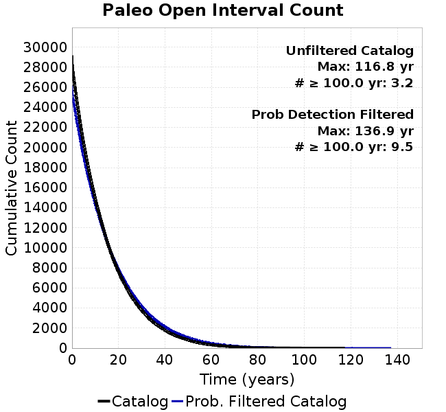 |  |
|---|
Open interval probabilities table:
| Open Interval (yr) | Catalog Probability | Catalog Poisson Probability | Prob. Filtered Catalog Probability | Prob. Filtered Catalog Poisson Probability | Data Poisson Probability |
|---|---|---|---|---|---|
| 10.00 | 0.8592502 | 0.49965683 | 0.8802889 | 0.53651637 | 0.33238843 |
| 20.00 | 0.60742927 | 0.24965695 | 0.65497243 | 0.28784984 | 0.110482074 |
| 30.00 | 0.38305417 | 0.1247428 | 0.4384308 | 0.15443616 | 0.036722966 |
| 40.00 | 0.22120807 | 0.062328592 | 0.2711201 | 0.08285753 | 0.012206289 |
| 50.00 | 0.11826586 | 0.031142907 | 0.15777273 | 0.04445442 | 0.004057229 |
| 60.00 | 0.054648645 | 0.015560766 | 0.08237009 | 0.023850525 | 0.001348576 |
| 70.00 | 0.023489555 | 0.007775043 | 0.040197413 | 0.012796197 | 4.4825108E-4 |
| 80.00 | 0.008119831 | 0.0038848533 | 0.017266102 | 0.0068653696 | 1.4899348E-4 |
| 90.00 | 0.0034901483 | 0.0019410935 | 0.0071756467 | 0.0036833833 | 4.952371E-5 |
| 100.00 | 8.222261E-4 | 9.698806E-4 | 0.0024898725 | 0.0019761955 | 1.6461108E-5 |
| 110.00 | 4.5571194E-4 | 4.8460747E-4 | 8.4753736E-4 | 0.0010602613 | 5.4714824E-6 |
| 120.00 | 0.0 | 2.4213744E-4 | 3.9407506E-4 | 5.688475E-4 | 1.8186574E-6 |
| 130.00 | 0.0 | 1.2098562E-4 | 1.2200042E-4 | 3.0519604E-4 | 6.045007E-7 |
| 140.00 | 0.0 | 6.0451293E-5 | 0.0 | 1.6374266E-4 | 2.0092905E-7 |
We first create a tapered moment release time series for the entire catalog. Each event's moment is distributed across a 25 year Hanning (cosine) taper. Here is a plot of a random 2,000 year section of this time series:
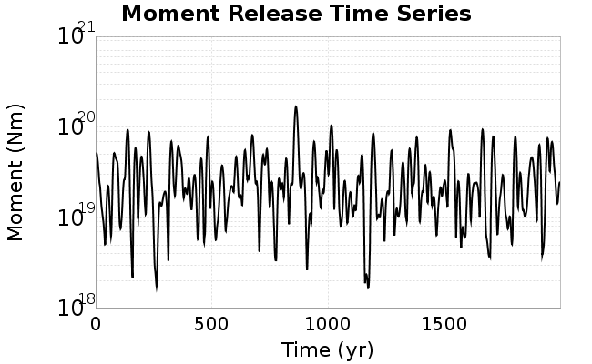
We then compute Welch's power spectral density estimate on the entire time series. Results are plotted below, with a Poisson randomization of the catalog also plotted in gray as a control. Significant deviations above the Poisson model indicate synchronization at that period.

A_1 = 0.003
fA = .1
B_1 = 0.01
muSlipAmp_1 = .0
muSlipInvDist_1 = 1.0
cohesion = 0.0
Dc_1 = 1.0000000000000000818e-05
mu0_1 = 0.6
ddotStar_1 = 9.9999999999999995475e-07
ddotAB_1 = 9.9999999999999995475e-07
alpha_1 = 0.0
theta0_1 = 200000000
tau0_1 = 55.1
sigma0_1 = 100
sigmaFracPin = .5
lowSigmaAction = 1
maxThetaPin = 1.0e13
ddotEQ_1 = 1
ddotEQFname =
stressOvershootFactor = 0.10000000000000000555
lameLambda = 30000
lameMu = 30000
slowSlip_1 = 0
nEq = 100000000000
KZeroFrac = 0
muPin = 1.0
tStart = 0
maxT = 3.16e13
maxWallTime = 169200
maxTrans = 1.0000000000000000159e100
faultFname = UCERF3FM.15km.1km.tri.flt
outFnameInfix = a0_003b0_01
writeTau = 2
writeSigma = 2
writeSlip = 0
writeSlipSpeed = 0
writeState = 0
writeTheta = 2
writePED = 1
writeTransitions = 1
minDtWrite = 0
minDtWriteCoseismic = 0
minDtWriteInterseismic = 0
minMagWrite = 7.7
writeStiffness = 0
stressRateSpecification = 1
dMu3 = 0.01000000000000000
initTauFname =
initSigmaFname =
initThetaFname =
initSlipSpeedFname =
AFname =
BFname =
DcFname =
mu0Fname =
ddotStarFname =
ddotABFname =
alphaFname =
KTauFname = /u/sciteam/gilchris/scratch/stiffness_25a589d/Ktau.25a589d.out
KSigmaFname = /u/sciteam/gilchris/scratch/stiffness_25a589d/Ksigma.25a589d.out
tFailFname =
tauFailFname =
tauDotFname =
sigmaDotFname =
KZeroFname = UCERF3FM.15km.1km.tri.KZero
pinnedFname = UCERF3FM.15km.1km.tri.pin
neighborFname = UCERF3FM.15km.1km.tri.neighbors
stressRateFname =
slowSlipFname =
writePatchFname =
DEBUG = 0
ZBrentUpperBracket = 0
receiverElementAreaFrac = 0.8
receiverElementIntTol = 1.0e-4
receiverElementSubdivisionMax = 4
tgfDist1 = 3
tgfDist1 = 10
lowSigmaAction = 1
highSigmaAction = 0